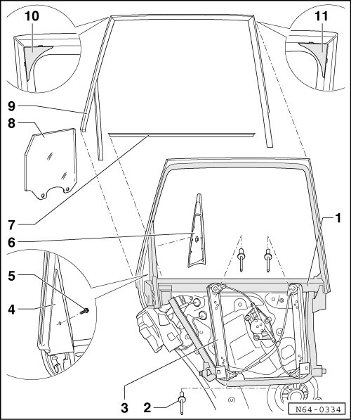

Individual Window Frame Components Assembly Overview
Rear Door Window
Individual Window Frame Components Assembly Overview

1 Window frame
• Riveted to assembly carrier in the illustration.
2 Hollow rivet
• Quantity: 4
• Join window regulator to window frame.
3 Window regulator
4 Trim
• The outer trim is secured by a bolt.
5 Bolt
6 Trim
• The inner trim is engaged in window frame.
7 Window recess seal
• Inserted on flange.
8 Door window
• Removing, refer to --> [ Door Window ] Rear Door Windows
9 Outer window guide
• Inserted on flange.
10 Cap
• Pushed between window frame and upper rear window guide.
11 Cap
• Pushed between window frame and upper front window guide.